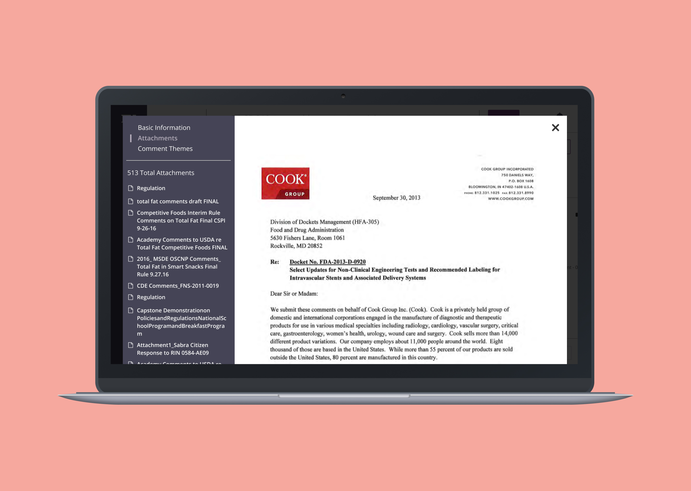
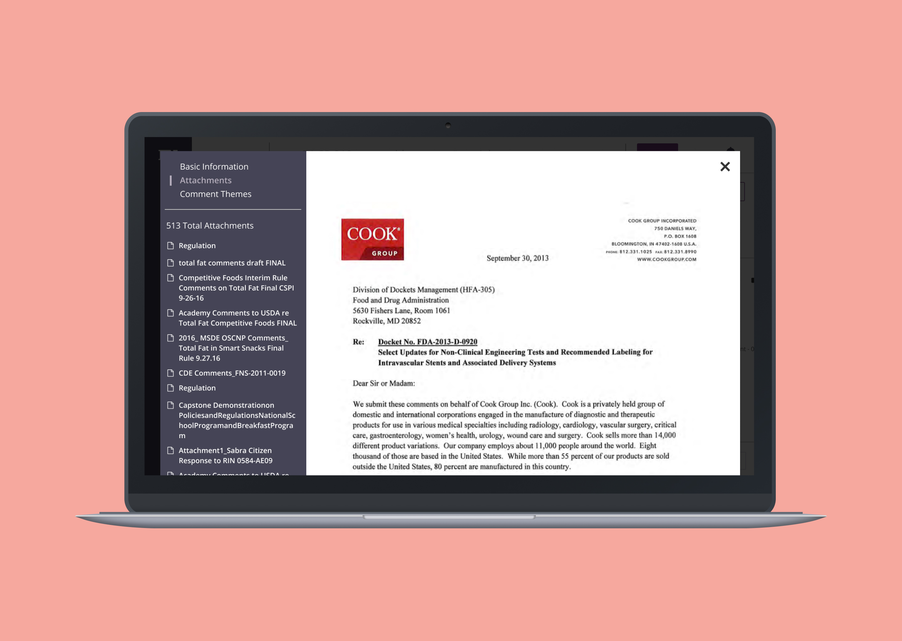

5 min read

The Federal Register website commits itself to present regulatory data to the public. More than two million companies rely on the site to stay dedicated to government issues. Businesses need to follow regulations at the risk of million-dollar fines. In late 2016, I redesigned the Federal Regulations to support FiscalNote's growth.
In the beginning, the Product, Design, Support, and Sales teams gathered to discuss several customer requests. Alongside our state data, federal information allows users to be active on both. Since they worked in both federal and state issues, this idea made sense. The executive team echoed this view as it gave means to invest in the international market. Adding federal data for China, Portugal, and Brazil would help drive customer growth. I worked with my Product Manager to document and track these requests. I added them to a report to show the balance between business goals and user outcomes. This report ensured alignment across the team.
The main challenge was easing the fear of missing out on policy information to lessen fines. Staying on top of any issue, and being proactive is key to building their strategy. I tracked them by measuring several goals. Below are two examples of goals we set for ourselves. ✶ We will be successful if we reduce the time to identify similar comments by 50% within six months. ✶ We will be successful if we deliver a clear and cohesive experience on our platforms.
We began our research by speaking to a co-worker who was a former Director of Regulatory Affairs. They gave us insight into the responsibilities and motivations of our audience. I talked with ten other users to understand their day-to-day processes and identify problems. They spend their time tracking the stages of regulation, researching, and building coalitions. Their primary motive is to be proactive on matters and protect the company. The government will issue million-dollar fines if not done well. From the interviews, I compiled the insights, gathered the data, and presented it in a persona. I refreshed it to meet any new criteria and ensure the solutions were user-centered.
In my initial audit, I named many design issues that required a better experience. Obtaining records was confusing, and the visual design didn't help. Next to my goals, the development team wanted to restructure the fragile backend. To scale the product and increase performance, we needed to rebuild it.
Next, we gathered various stakeholders to brainstorm solutions around the problems. Each person sketched their solution and voted. I distilled the ideas into two significant experiences, presented them, and ideated. ✶ How might we help them identify like-minded comments and build coalitions? ✶ How might we help display documents that enable them to search for key terms?
With our goals set, I started creating mockups and prototypes. I went through several feedback loops and iterated to complete a workflow to test. Several iterations later, I examined the experience to confirm assumptions. We designed two components — the comment themes and document viewer experiences. Comment Themes are groupings of public comments based on the language in the text. Comments sorted and searchable by text help lobbyists build coalitions and networks. The document viewer displays documents and comments within the platform—the viewer displays and searches for language to share information with their managers
 

My goals revolved around reducing the time to find like-minded comments and ease of use. The goal for identifying was 3 minutes. The average user time was 1 minute 38 seconds, lower than that 3-minute but not the 50% decrease. While significant, we saw room for improvement. The rate for ease of use was 79%, lower than the 90% goal. While successful, I attribute the low score to an ordinary validation. With more time, I felt it could have been better.

Overall, users felt more proactive. They could devise strategies with confidence and build coalitions outside their network. With the document viewer, they could find critical terms for their comments. Over the next month, the new offering added $1.8 million to the company's ARR. While successful, we have a backlog of improvements. Most of the feedback revolved around compliance and adhering to the official rule.